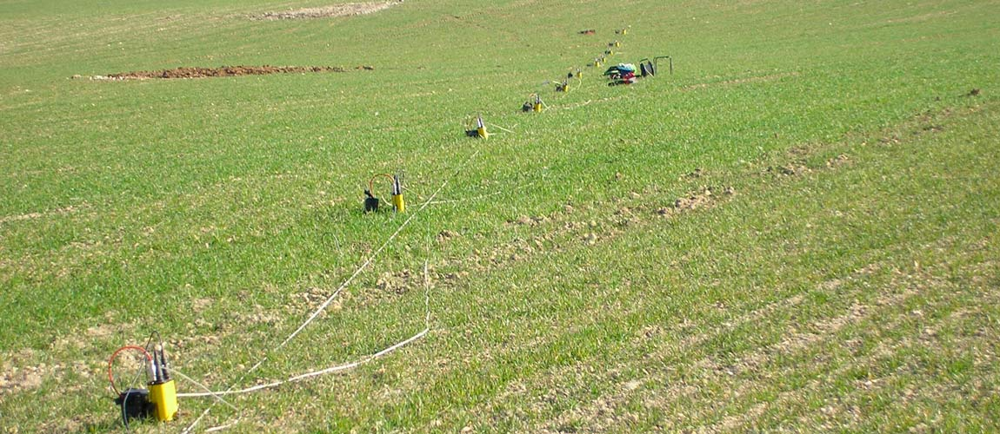
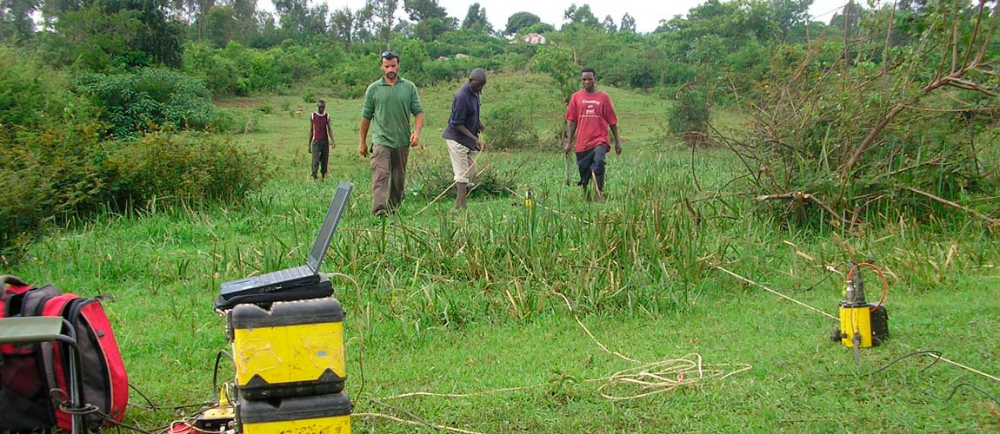
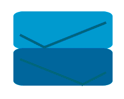

Métodos asociados a procesos físicos
Incluidas en nuestros servicios geofísicos existen técnicas no directamente geofisicas. Aunque por su
Estas técnicas utilizadas en la ingeniería civil, Geotecnia, etc, se aplican a investigaciones asociadas al controles de seguridad o auscultación de de obras, tanto en fases previas y finales, como en fases de construcción.

Termografía de infrarrojos
La termografía se basa en las propiedades de absorcion de calor de los materiales. Así como del factor de disipación del calor con el tiempo.
Testificación
La testificación de sondeos es una técnica comunmente utilizada en obras civiles.
Perfilometro
La testificacón de sondeos es una técnica comunmente utilizada en obras civiles.